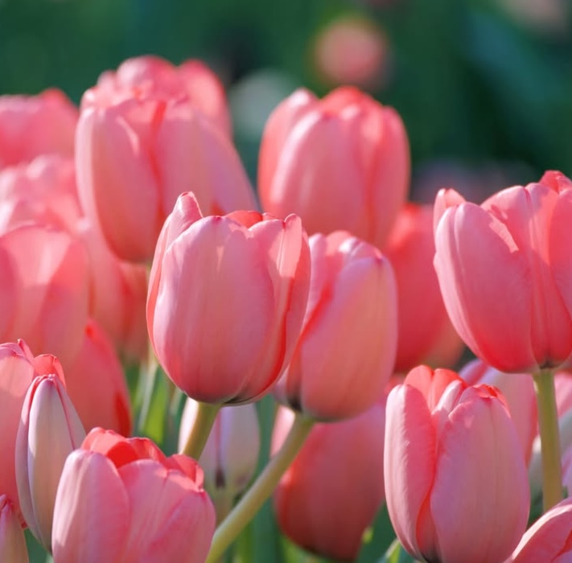

Hopeful | Graceful | Adaptable | Refreshing

You are always reaching for the next phase of your own personal
growth. Practical, clear-headed, and incredibly reliable, you are the steady ground for your friends
when things feel uncertain. You have a brilliant knack for bringing order to chaos and finding fresh,
simple solutions to complicated problems. Like a tulip blooming in early spring, you
represent renewal, grace, and the beautiful power of a fresh start.
Fun fact: During
"Tulip Mania" in 17th-century Holland, tulip bulbs became so
valuable that they
were used as currency. Sometimes, a single bulb could cost more than a house.
Floriography:
Red tulips are a bold declaration of love, purple tulips represent royalty, and white tulips are
used to ask for forgiveness or convey worthiness.
Origin: Native to Central Asia but
popularized in the Netherlands
Best conditions:
Cool climates, full to partial sun, well-drained and fertile soil